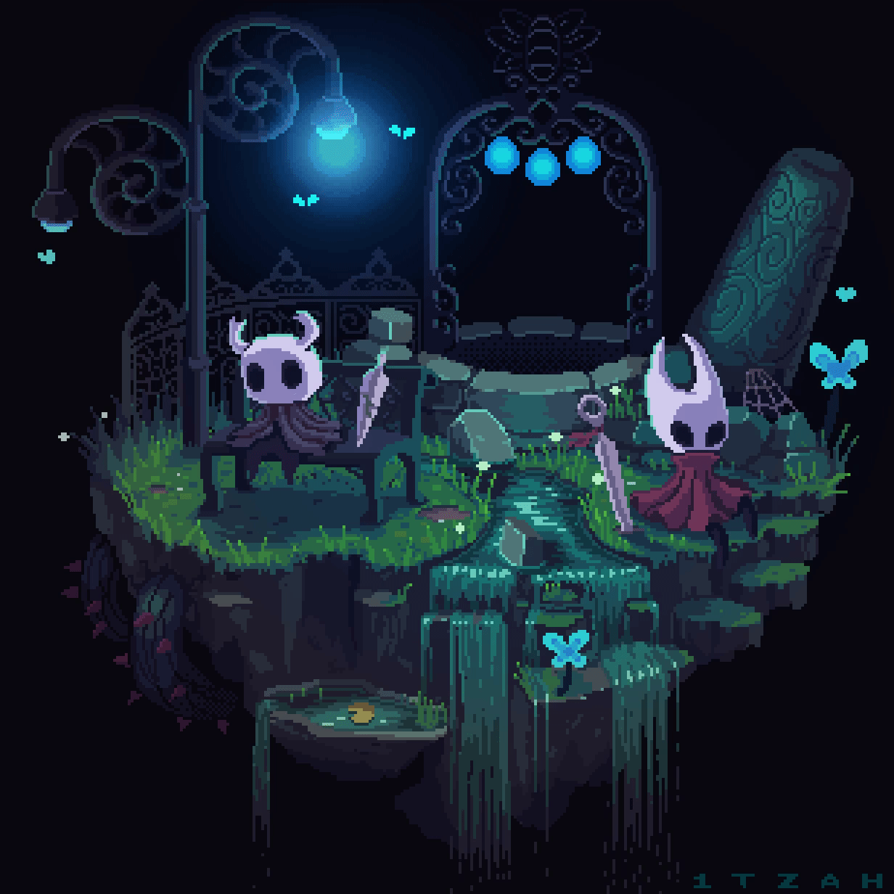

Biografia
Meu nome é Gabriel, tenho 20 anos e sempre fui apaixonado por tecnologia e jogos. Desde pequeno, ficava fascinado em entender como as coisas funcionavam, desmontando aparelhos ou imaginando como os jogos que eu tanto gostava eram criados. Essa curiosidade me acompanhou ao longo dos anos e acabou me levando a escolher um caminho na área de programação.
Hoje, estou focado em me tornar um programador front-end. Adoro a ideia de criar interfaces intuitivas e visuais que conectem pessoas e facilitem suas vidas no mundo digital. Estou me dedicando ao estudo de linguagens como HTML, CSS e JavaScript, além de explorar ferramentas e frameworks modernos que ajudam a transformar ideias em experiências interativas.
Minha paixão pela tecnologia me motiva a aprender mais a cada dia e a buscar sempre novas soluções criativas. Para mim, programação não é só um trabalho, mas uma forma de dar vida a projetos e de contribuir para um futuro mais conectado e inovador.
